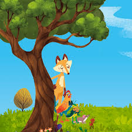

Era uma vez…
Uma galinha descansava num poleiro bem alto. Lá de cima, viu a raposa entrar no galinheiro.
A penetra olhou pra lá e pra cá. Estava morta de fome. Queria encontrar uma ave descuidada pra encher a barriga. Quando viu a dona da casa, vibrou. Pra lá de feliz, disse com voz macia.
Parecia uma mãezona: — Minha querida, soube que você está doente. Desça. Quero lhe dar um remedinho. — Estou gripada. Mas não sou boba. Se descer, vou direto pro seu papo. Tire o cavalinho da chuva. Suma daqui.
Decepcionada, a raposa pôs rabinho entre as pernas. Partiu pra outra.
De vez em quando a gente tem de ser esperto, não é? Vale o exemplo do Luiz. Ele era capitão do time da escola. O Paulo era da outra escola. As duas equipes iam disputar o campeonato. Na véspera do jogo, o Paulo foi visitar o Luiz. Queria saber se todos os atletas iriam jogar. Luiz disse que não tinha decidido ainda.
Moral da história: Desconfie de inimigo que se finge de amigo.